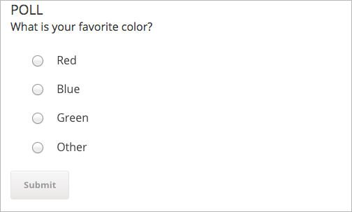
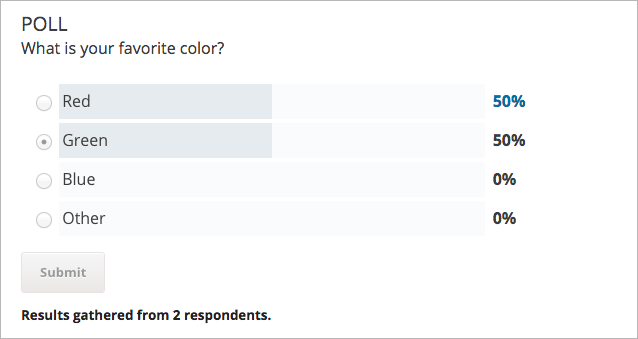
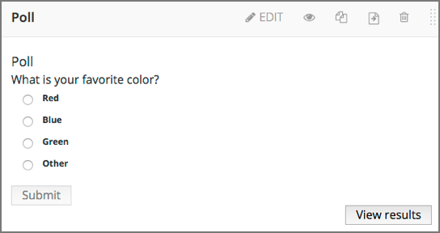
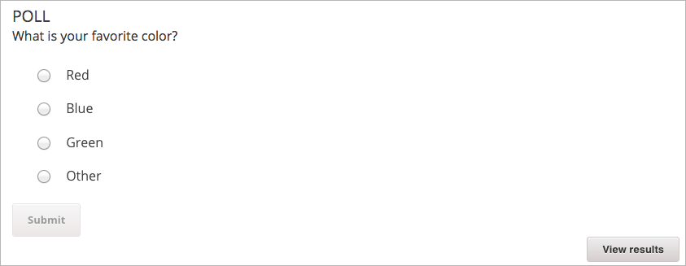

11.25. Poll Tool#
Note
EdX offers full support for this tool.
This section describes how to include polls in your course.
11.25.1. Overview#
You can include polls in your course to gather learners’ opinions on various questions.
For a poll, you configure one question and multiple possible answers. If you need to ask multiple questions, use the Survey Tool.
The following example poll has four possible answers to the question.
{kind=link}
After learners submit their answers to the poll question, they see the poll results that have been gathered at this time, unless the poll has been configured to hide results.
{kind=link}
11.25.2. Enable the Poll Tool#
Before you can add a poll to your course, you must enable the poll tool in Studio or OLX (open learning XML).
To enable the poll tool in Studio, you add the "poll" key to the Advanced
Module List on the Advanced Settings page. (Be sure to include the
quotation marks around the key value.) For more information, see
Enabling Additional Exercises and Tools.
Alternatively, you can use OLX to enable the poll tool.
11.25.2.1. Enable the Poll Tool in OLX#
To enable polls in your course, you edit the XML file that defines the course structure.
Open the XML file for the course in the course directory. In the course
element’s advanced-modules attribute, add the string poll.
For example, the following XML code enables polls in a course.
<course advanced_modules="["survey",
"poll"]" display_name="Sample Course"
start="2015-01-01T00:00:00Z">
...
</course>
11.25.3. Add a Poll in edX Studio#
You must enable the poll tool before you add the component.
On the Course Outline page, open the unit where you want to add the poll.
Under Add New Component click Advanced, and then select Poll.
The new component is added to the unit, with a default example poll that contains several answer fields.
In the new component, select Edit.
In the Display Name field, enter the name for the component.
In the Question/Prompt field, enter text that learners see above the poll. You can use Markdown in this field.
In the Feedback field, enter text that learners see after they submit a responses. You can use Markdown in this field.
In the Private Results field, to hide poll results from learners, select True. If you leave the default value, False, learners see poll results after they submit responses.
In the Maximum Submissions field, change the value to the number of times that you want to allow learners to submit responses. Enter 0 to allow unlimited responses.
Note
If you allow learners to submit responses more than once, you should set Private Results to True. Otherwise, learners will be able to change their responses after seeing others’ responses.
Configure answers for the poll.
In each Answer field, enter the answer text that learners see.
You must enter either text or an image path, or both, for each answer. To enter an image, use the Studio URL for the image.
If you use an image, you must enter useful alternative text in the Image alternate text field for non-sighted users.
To add answers, select Add answer at the bottom of the editor. New answers are added at the bottom of the list.
To change the order of answers, select the up and down buttons next to each answer.
To remove an answer, select Delete next to the answer.
Select Save.
{kind=link}
11.25.4. Add a Poll in OLX#
To add a poll XBlock in OLX, you create the poll element. You can embed
the poll element in the vertical element, or you can create the
poll element as a standalone file that you reference in the vertical.
The following example shows the OLX definition for a poll with four answers.
<poll url_name="f4ae7de0006f426aa4eed4b0b8112da5" xblock-family="xblock.v1"
feedback="Feedback"
display_name="Poll"
private_results="false"
question="What is your favorite color?"
max_submissions="1"
answers="[
["R",
{
"img": "/static/image.png",
"img_alt": "Alt 1",
"label": "Red"
}
],
["B",
{
"img": "/static/image.png",
"img_alt": "Alt 2",
"label": "Blue"
}
],
["G",
{
"img": "/static/image.png",
"img_alt": "Alt3",
"label": "Green"
}
],
["O",
{
"img": "/static/image.png",
"img_alt": "Alt 4",
"label": "Other"
}
]
]
"/>
11.25.4.1. poll Element Attributes#
The following table describes the attributes of the poll element.
Attribute |
Description |
|
The unique identifier of the poll. |
|
The XBlock version used. Must be |
|
Whether the poll results are shown to learners ( |
|
The display name for the poll. |
|
The prompt for the poll. |
|
The text shown to learners after they submit a response. |
|
The number of times a learner can submit poll answers. Use |
|
An array of answers in the poll. Each answer has a unique identifier, and a dictionary that defines values for the following names.
Each answer must have a value for |
11.25.5. Editing Published Polls#
Do not publish a poll until you have completed and tested it. You should avoid changing a poll after learners have begun to use it.
If you must edit a poll after learners have submitted answers take into account the following implications.
If you edit the value of an answer, previous submissions are associated with the new answer value. This change can result in an inaccurate picture of the responses.
If you change the poll so that previous submissions are invalid, by removing an answer, those submissions are deleted when learners next view the unit. Learners with invalid submissions can submit new responses.
11.25.6. View Poll Results#
When you view the poll as a course staff member, you can view results of the poll inside the course.
Select View results in the poll.
{kind=link}
The results of the poll are then displayed.